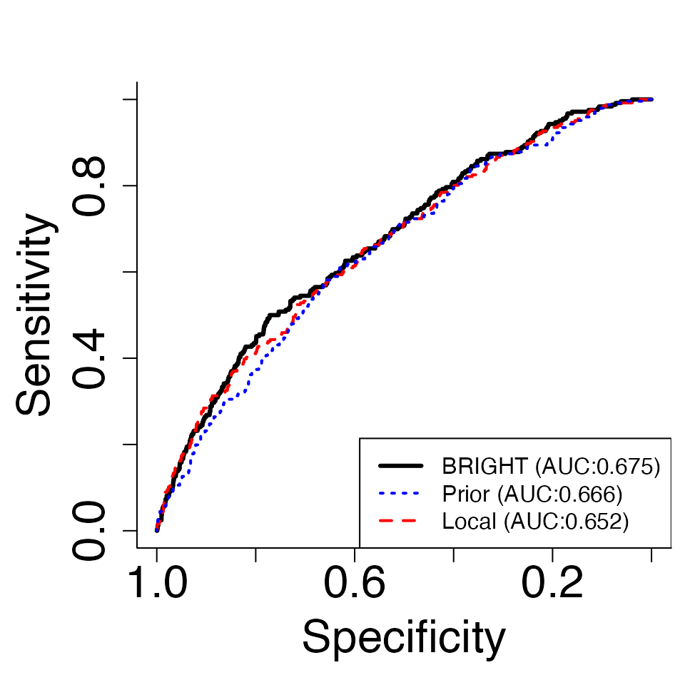
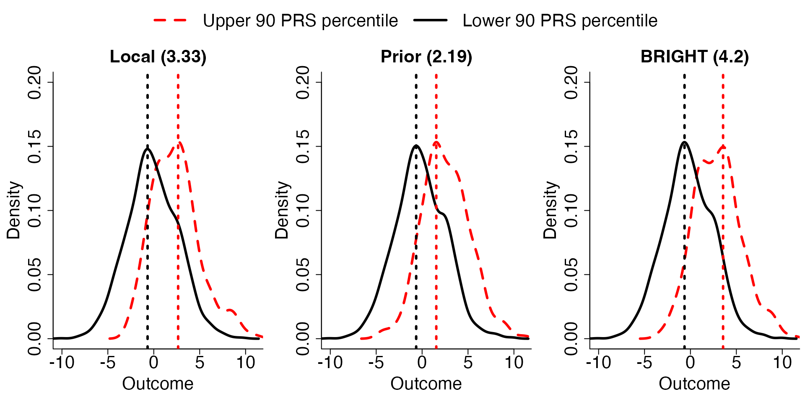
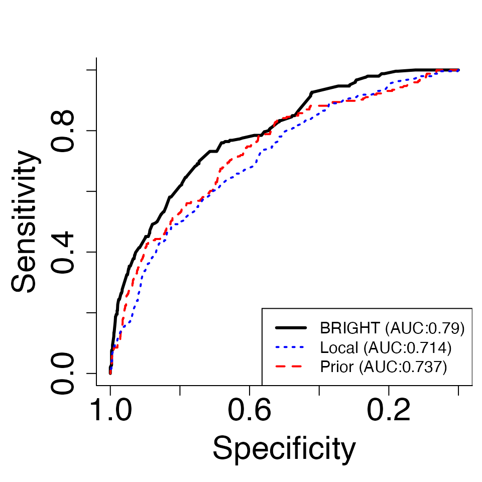

Polygenic Risk Scores (PRS) are commonly employed tools for predicting genetic risks; however, their effectiveness is often limited when applied to minority populations that are underrepresented in clinical studies. This limitation has spurred the development of a transfer learning approach aimed at harnessing insights gained from extensively studied majority populations. In response to this challenge, we introduce the BRegman divergence-based Integrational Genetic Hazard Trans-ethnic (BRIGHT) estimation method.
We present two variants of the BRIGHT model: BRIGHTi and BRIGHTs. BRIGHTi incorporates individual-level data from the target minority population with prior knowledge derived from majority populations. In contrast, BRIGHTs utilizes summary-level data from the target minority population while preserving privacy when incorporating prior information from majority populations. Both variants of the BRIGHT model support versatile penalty structures for fine-mapping genetic markers.
| Method | Description | Example |
|---|---|---|
| BRIGHTs | BRIGHTs utilizes summary statistics from both target minority and prior majority data to construct trans-ethnic PRS. Continuous, binary, and count outcomes are implemented in the package. [1]. | tutorial |
| BRIGHTi | BRIGHTi utilizes individual-level data from target minority population and summery-level data from prior majority population to construct trans-ethnic PRS. Continuous, binary, and count outcomes are implemented in the package. [2]. | tutorial |
Employing BRIGHT empowers researchers to transcend the constraints of single-ethnic PRS, leading to enhanced prediction accuracy specifically tailored for minority populations. This toolkit offers an invaluable resource for facilitating the transfer of knowledge and optimizing the integration of information across populations characterized by diverse genetic backgrounds. Furthermore, the package provide an extensive array of plotting tools, enabling researchers to effectively visualize population heterogeneity and assess model performance.
The flowchart for the pipeline and major functions is presented below.
Alt
To summarize, BRIGHT estimation procedure utilizes Bregman-divergence to measure the differences between the populations and optimally balance the information from them. The method enjoys the following properties :
The detailed BRIGHT model can be found in the Appendix.
The BRIGHT estimation procedure allows for the incorporation of various types of individual or summary-level information from the prior majority population in the construction of BRIGHT PRS:
Moreover, the BRIGHT estimation procedure can also incorporate flexible individual-level or summary-level information from the target minority population. The specific data requirements for each setting are discussed separately in the following sections.
BRIGHT requires the following R packages: Rcpp, Matrix, mvtnorm, BEDMatrix, grpreg. Install them by:
install.packages(c("Rcpp", "Matrix", "mvtnorm", "BEDMatrix", "grpreg"), dependencies=TRUE)For Windows and Mac users, it would be easiest to download the following binaries (Windows, Mac) and install using:
install.packages("/path/to/downloaded_binary_file", repos=NULL)If you are on Linux or you would like to compile from source, you can download the source codes BRIGHT_0.0.1.tar.gz. Mac users should refer to this page for the various dependencies required. Install then via:
install.packages("/path/to/downloaded_source.tar.gz", repos=NULL, type="source")If you have devtools, you can also type:
install_github("To be determined")or
install_github("To be determined")for the latest development version. Or you can clone the latest development version here and install yourself using devtools.
Most functions in BRIGHT impute missing genotypes in PLINK bfiles with a homozygous A2 genotype, which is the same as using the --fill-missing-a2 option in PLINK. It is the user’s responsibility to filter out individuals and SNPs with too many missing genotypes beforehand.
In this section, we present a toy example to demonstrate the main functions, basic usage, and output results of the package. This example serves as an introduction to the package’s capabilities, and we will delve into the different versions of BRIGHT and their specific applications in the subsequent sections.
First, we load the BRIGHT package:
In the default version of the package, the implemented method is BRIGHTs with identity link function, which integrates summary-level information from both the target and prior data. In this section, we will demonstrate the application of this method using a toy example. Let’s load the pre-simulated toy example data for illustration:
data(ToyExample)The toy example contains the summary statistics from both target and prior population with a continuous trait. For more detailed discussion on the format of target and piror summary statistics, please refer to BRIGHTs with identity link section.
The BRIGHTs model can be fit by using the basic function BRIGHTs with LASSO penalty and identity link by default:
out <- BRIGHTs(data = dat)## Extracting number of samples and rownames from SAS1_train.fam...## Extracting number of variants and colnames from SAS1_train.bim...## Best eta based on AIC is 0.336
## Best lambda based on AIC is 0.123out is a list object containing all the information from the fitting of BRIGHTs. We provide the variable selection result based on Akaike information criterion (AIC) by default; other choices of hyperparameter fine tuning can be found in the section below.
The AIC change with respect to the hyperparameters, \(\eta\) and \(\lambda\), can be plot by using the following function:
# Plot AIC
Eta_curve.plot(out,valid.type = "AIC")These plots present the AIC (consistent estimate of the true risk, the smaller the better) measuring model performance for target minority model (squares) and BRIGHT model (lines with circles) with varying \(\eta\) values and \(\lambda\) values. The \(\eta\) parameter controls the relative importance of prior information, while \(\lambda\) controls the number of selected markers. The \(\eta\)-curve highlights the implications of integrating varying degrees of prior information into the construction of the PRS on the target population. As a result, it effectively portrays the levels of heterogeneity between datasets and provides guidance on the optimal degree of prior information incorporation. The \(\lambda\)-curve helps the user to visualize the model performance associated with different numbers of makers selected and provides guidance on selecting optimal number of variables.
The model details are provided in the Appendix. Below we present the format of input data and implementation tutorials for BRIGHTs with summary-level target data and identity link function.
BRIGHTs method with identity link function utilizes a wide variety of summary-level data from different populations to carry out transfer-learning: (1), From the target minority population, BRIGHTs requires either the GWAS summary statistics or SNP-wise (marginal) genotype-trait correlation (\(\boldsymbol X\boldsymbol y/n\), where \(\boldsymbol X\), \(\boldsymbol y\) can be either standardized or unstandardized). (2) From the prior majority population, one of GWAS summary statistics, SNP-wise genotype-trait correlation, or coefficient estimates (e.g. from joint models such as PRS or LASSO regression) is required. (3) From the linkage disequilibrium (LD) reference population, Plink binary files (.bed, .bim and .fam) are required for user specified LD; alternatively, precalculated 1000 genome project based LD will be used by default.
| Populations | Required data | Format |
|---|---|---|
| Target | (1), GWAS summary statistics including sample size, association direction, and P-values. (2), SNP-wise genotype-trait correlation. | data.frame |
| Prior | (1), GWAS summary statistics including association direction, sample size, and P-values. (2), SNP-wise genotype-trait correlation. (3), Coefficient estimates of the prior PRS | data.frame |
| LD | (1), Package provided LD based on 1000 genomes project cohort by default. (2), User specified LD. | Plink binary files (.bed, .bim and .fam) |
Summary data from target and prior population are only required to contain a subset of markers from the LD reference matrix, and no further assumptions are made on the covariate space of either target or prior summary statistics. In the case where either the input target or prior summary data are not a subset of the provided LD, the BRIGHT package automatically removes markers not in LD.
As discussed, there are two options of summary statistics for the minority population. Below we present the two options separately and note that in application only one of them is required. We use Tind to indicate the data type of target summary data being provided to BRIGHTs, it should be either “GWAS” or “Corr”, corresponding to the GWAS summary statistics or the SNP-wise genotype-trait correlation, respectively. We use Tss to store the summary statistics in data.frame format; it must match with the Tind indicator. We use TN to indicate the target sample size.
The first option of summary-level data for target population is the GWAS summary statistics.
### Read target minority GWAS summary statistics file###
# Read in target GWAS
TN <- 100
Tind <- "GWAS"
Tss <- read.table("~/Desktop/research/Kevin He/PRS/Rewrite_Lassosum/example_2/SAS1_train.GWAS",header = T)
head(Tss)## CHR BP A1 A2 Sign N P
## 1 1 937250 G C 1 100 0.71110
## 2 1 1047374 A T 1 100 0.02217
## 3 1 1177211 C G 1 100 0.64060
## 4 1 1319926 T C -1 100 0.30080
## 5 1 1618598 T G 1 100 0.40750
## 6 1 1814354 T C 1 100 0.37750We require the GWAS summary statistics from the target minority data to contain 7 columns ordered exactly as above: the “CHR” column is the chromosome name and must be from 1 to 22; the “BP” column is the corresponding SNPs position in base pair; “A1” column is the effect allele and “A2” column is the alternative allele; “Sign” is the marginal association direction for each SNPs (the sign of the beta coefficients); “N” column is the sample size used for each SNPs from GWAS study; “P” column is the p-value of the t-test from GWAS.
The second option of summary-level data for target population is the SNP-wise correlation of SNPs and traits.
### Read target minority marginal genotype-trait inner product file###
# Read in target GWAS
TN <- 100
Tind <- "Corr"
Tss <- read.table("~/Desktop/research/Kevin He/PRS/Rewrite_Lassosum/example_2/SAS1_train.Corr",header = T)
head(Tss)## CHR BP A1 A2 Corr
## 1 1 937250 G C 0.03749631
## 2 1 1047374 A T 0.22858076
## 3 1 1177211 C G 0.04725401
## 4 1 1319926 T C -0.10450216
## 5 1 1618598 T G 0.08373729
## 6 1 1814354 T C 0.08919654We require the correlation summary statistics from the target minority data to contain 5 columns ordered exactly as above: the “CHR” column is the chromosome name and must be from 1 to 22; the “BP” column is the corresponding SNPs position in base pair; “A1” column is the effect allele and “A2” column is the alternative allele; the “Corr” column contains the SNP-wise genotype-trait correlation.
The ultimate target summary statistics BRIGHTs use for model fitting is the SNP-wise genotype-trait correlation. When GWAS summary statistics are provided, the package automatically convert them to the standardized version of SNP-wise genotype-trait correlation. The mathematical details are provided in the Appendix under “Retrieve r from GWAS”.
As discussed, there are three options of summary statistics to be used for minority population, below we present the three options separately and note that only 1 of the summary statistics is required. We use Pind to indicate the prior summary data type being provided to BRIGHTs, it should be either “GWAS”, “Corr” or “Coef”, corresponding to the GWAS summary statistics, the correlation or the PRS coefficients, respectively. We use Pss to store the summary statistics in data.frame format, which must match with the Pind indicator. We use PN to indicate the prior data sample size, it is only required when “GWAS” or “Corr” type of prior data is provided.
The first option of summary-level data for prior population is the GWAS summary statistics.
### Read prior majority GWAS summary statistics file more than 1 prior majority data can be read in###
PN <- 11514
Pind <- c("GWAS")
Pss <- read.table("~/Desktop/research/Kevin He/PRS/Rewrite_Lassosum/example_2/EUR.GWAS",header = T)
head(Pss)## CHR BP A1 A2 Sign N P
## 1 1 937250 G C -1 11514 0.64630
## 2 1 1047374 A T 1 11514 0.31640
## 3 1 1177211 C G -1 11514 0.31500
## 4 1 1319926 T C -1 11514 0.07907
## 5 1 1618598 T G -1 11514 0.38920
## 6 1 1814354 T C 1 11514 0.65630We require the GWAS summary statistics from the prior data to contain 7 columns ordered exactly as above: the “CHR” column is the chromosome name and must be from 1 to 22; the “BP” column is the corresponding SNPs position in base pair; “A1” column is the effect allele and “A2” column is the alternative allele; “Sign” is the marginal association direction for each SNPs (the sign of the beta coefficients); “N” column is the sample size used for each SNPs from GWAS study; “P” column is the p-value of the t-test from GWAS.
The second option of summary-level data for prior population is the SNP-wise correlation of single SNPs and traits.
### Read prior majority marginal genotype-trait inner product more than 1 prior majority data can be read in###
PN <- 11514
Pind <- c("Corr")
Pss <- read.table("~/Desktop/research/Kevin He/PRS/Rewrite_Lassosum/example_2/EUR.Corr",header = T)
head(Pss)## CHR BP A1 A2 Corr
## 1 1 937250 G C -0.004277185
## 2 1 1047374 A T 0.009337738
## 3 1 1177211 C G -0.009364789
## 4 1 1319926 T C -0.016366512
## 5 1 1618598 T G -0.008025370
## 6 1 1814354 T C 0.004147810We require the correlation summary statistics from the prior data to contain 5 columns ordered exactly as above: the “CHR” column is the chromosome name and must be from 1 to 22; the “BP” column is the corresponding SNPs position in base pair; “A1” column is the effect allele and “A2” column is the alternative allele; the “Corr” column contains the marginal genotype-trait correlation.
The third option of summary-level data for prior majority population is the PRS coefficients from a joint model.
### Read prior majority GWAS summary statistics file, marginal genotype-trait inner product, or joint coefficient estimates, more than 1 prior majority data can be read in###
Pind <- c("Coef")
Pss <- read.table("~/Desktop/research/Kevin He/PRS/Rewrite_Lassosum/example_2/EUR.Coef",header = T)
head(Pss)## CHR BP A1 A2 Coef
## 1 1 937250 G C 0.000000000
## 2 1 1047374 A T 0.000000000
## 3 1 1177211 C G 0.000000000
## 4 1 1319926 T C -0.000878137
## 5 1 1618598 T G 0.000000000
## 6 1 1814354 T C 0.000000000We require the PRS coefficient summary statistics from the prior data to contain 5 columns ordered exactly as above: the “CHR” column is the chromosome name and must be from 1 to 22; the “BP” column is the corresponding SNPs position in base pair; “A1” column is the effect allele and “A2” column is the alternative allele; the “Coef” column contains the beta coefficients from a joint model.
The ultimate prior summary statistics BRIGHTs use for model fitting is the PRS coefficients. When GWAS summary statistics or SNP-wise correlations are provided, the package automatically compute the PRS coefficients through BRIGHTs with \(\eta=0\) (equivalent to LASSOsum PRS), and select tuning parameter \(\lambda\) by AIC criterion. The mathematical details are provided in the Appendix under “BRIGHT.S”.
BRIGHTs also need to account for Linkage Disequilibrium (LD) via a reference panel (1000 genomes project as default). The reference panel is assumed to be in PLINK 1 binary format. Tref is used for reading in the reference LD information for target population, if Tref are provided as “EUR.hg19” (European ancestry with hg19 build), “AFR.hg19” (African ancestry with hg19 build), “EAS.hg19” (East Asian ancestry with hg19 build), “SAS.hg19” (South Asian ancestry with hg19 build) , “AMR.hg19” (America admixed ancestry with hg19 build), or “EUR.hg38” (European ancestry with hg38 build), “AFR.hg38” (African ancestry with hg38 build), “EAS.hg38” (East Asian ancestry with hg38 build), “SAS.hg38” (South Asian ancestry with hg38 build), “AMR.hg38” (America admixed ancestry with hg38 build), then the default 1000 genome project reference panels with corresponding build will be used. Otherwise, Tref needs to be provided as a directory to the PLINK1 binary format files (.bim, .bed, .fam). If PLINK1 files are provided then the user also needs to provide the LDblocks in TLDblocks to use for the block structures in calculating LD, it also should be provided as “EUR.hg19” (European ancestry with hg19 build), “AFR.hg19” (African ancestry with hg19 build), “EAS.hg19” (East Asian ancestry with hg19 build), “SAS.hg19” (South Asian ancestry with hg19 build) , “AMR.hg19” (America admixed ancestry with hg19 build), or “EUR.hg38” (European ancestry with hg38 build), “AFR.hg38” (African ancestry with hg38 build), “EAS.hg38” (East Asian ancestry with hg38 build), “SAS.hg38” (South Asian ancestry with hg38 build), “AMR.hg38” (America admixed ancestry with hg38 build).
When GWAS summary statistics or SNP-wise correlation are entered for prior data, the package will automatically perform BRIGHTs with \(\eta=0\) on the prior summary data to construct the PRS coefficients. Therefore, LD reference for prior population is also required. Pref is used for reading in the reference LD information for prior population, the usage of Pref is exactly the same as Tref mentioned above. Similarly, when Plink1 binary files are provided for Pref, PLDblocks are also required to indicate the LDblocks to use for prior data.
### Specify the PLINK file stub of the reference panel or "EUR.hg19", "AFR.hg19", "EAS.hg19", "SAS.hg19", "AMR.hg19", "EUR.hg38", "AFR.hg38", "EAS.hg38", "SAS.hg38", "AMR.hg38" ###
Tref <- "~/Desktop/research/Kevin He/PRS/Rewrite_Lassosum/example_2/SAS1_train"
Pref <- "~/Desktop/research/Kevin He/PRS/Rewrite_Lassosum/example_2/EUR" #Pref is only required if the Pind is "GWAS" or "Corr"
### Read LD region file, only required if ref.bfile is provided as PLINK1 format ###
TLDblocks <- "SAS.hg19" # This will use LD regions as defined in Berisa and Pickrell (2015) for the South Asian population and the hg19 genome build.
PLDblocks <- "EUR.hg19" # This will use LD regions as defined in Berisa and Pickrell (2015) for the European population and the hg19 genome build. PLDblocks is only required if the Pind is "GWAS" or "Corr".
# Other alternatives available. Type ?BRIGHTs for more details. Reference: Berisa and Pickrell (2015)
A preprocessing step is required to remove the SNPs that are not in the reference panel from both target and prior summary data, convert target data into marginal SNPs-trait inner product, convert prior data into joint PRS coefficient estimates (By using BRIGHTs method with eta=0), and match the positions and alleles between the LD reference panel, target summary data, and prior summary data.
dat=PreprocessS(Tss, Tind, Tref, Pss, Pind, Pref, TLDblocks=TLDblocks, PLDblocks=PLDblocks,TN=TN,PN=PN)## Using user specified LD
## 1 source of prior information identified
## 100 SNPs passed filtering for target
## 100 SNPs passed filtering for prior
## "Coef" not found for prior data fitting BRIGHTs with eta=0 for prior
## data and using AIC to select hyper-parameters
## 100 SNPs passed filtering for Prior LASSOsum## Extracting number of samples and rownames from EUR.fam...## Extracting number of variants and colnames from EUR.bim...## Best lambda based on AIC is 0.015Then, BRIGHTs can be run by using standard pipeline with LASSO penalty and identity link function:
out <- BRIGHTs(data = dat)## Extracting number of samples and rownames from SAS1_train.fam...## Extracting number of variants and colnames from SAS1_train.bim...## Best eta based on AIC is 0.1
## Best lambda based on AIC is 0.107out is a list object containing all the information from the fitting of BRIGHT.
out contains a sequence of models corresponding to different hyperparameters, \(\lambda\) and \(\eta\) pairs. Users would prefer to select the best performance model for the purpose of constructing PRS. Due to only summary statistics being available for the target minority populations, the widely used cross-validation is not applicable for hyper-parameter fine-tuning. Here our package provide three options for using either AIC, individual-level or summary-level validation data to fine-tune hyperparameters.
We provide the variable selection result based on Akaike information criterion (AIC) by default without the use of validation datasets.
The AIC change with respect to the hyperparameters, \(\eta\) and \(\lambda\), can be visualized by using the following function:
# Plot AIC
Eta_curve.plot(out,valid.type = "AIC")These plots present the AIC (consistent estimate of the true risk, the smaller the better) measuring model performance for target minority model (squares) and BRIGHT model (lines with circles) with varying \(\eta\) values and \(\lambda\) values. The \(\eta\) parameter controls the relative importance of prior information, while \(\lambda\) controls the number of selected markers. The \(\eta\)-curve highlights the implications of integrating varying degrees of prior information into the construction of the PRS on the target population. As a result, it effectively portrays the levels of heterogeneity between datasets and provides guidance on the optimal degree of prior information incorporation. The \(\lambda\)-curve helps the user to visualize the model performance associated with different numbers of makers selected and provides guidance on selecting optimal number of variables.
In this subsection, we present the use of Valid.Ind to choose the best performance model when individual-level validation data is available.
We read in the individual-level validation data, including the Plink1 genotype directory (binary format) as well as the phenotypes. The first two columns of the phenotype data frame should match with the sample IDs in the Plink1 binary .fam file and the third columns of the phenotypes column should contain the phenotype values.
# Read in validation individual-level data
Valipheno <- read.table("~/Desktop/research/Kevin He/PRS/Rewrite_Lassosum/example_2/SAS2_phe.fam")
Valigeno <- "~/Desktop/research/Kevin He/PRS/Rewrite_Lassosum/example_2/SAS2"
print(Valigeno)## [1] "~/Desktop/research/Kevin He/PRS/Rewrite_Lassosum/example_2/SAS2"
head(Valipheno)## V1 V2 V3
## 1 0 711676 -1.9734284
## 2 0 711677 2.9197713
## 3 0 711679 -0.8409030
## 4 0 711680 -0.3243112
## 5 0 711681 -1.2262724
## 6 0 711682 1.0080495Then, the provided Valid.Ind() function can be used to perform model validation.
# Perform validation with individual-level validation data
Val <- Valid.Ind(out,Valipheno,Valigeno)## Extracting number of samples and rownames from SAS2.fam...## Extracting number of variants and colnames from SAS2.bim...## [1] "Best eta based on R2 is 1.438"
## [1] "Best lambda based on R2 is 0.284"
## [1] "Best eta based on MSPE is 2.336"
## [1] "Best lambda based on MSPE is 0.081"
## [1] "Best eta based on AIC is 0.1"
## [1] "Best lambda based on AIC is 0.107"Validation plots can be generated by using Contour.plot, Eta_curve.plot and Solution.path functions provided by the package.
# Plot Contour plots
Contour.plot(Val)Contour plots are used to select the best performing hyperparameter pairs, \(\eta\) and \(\lambda\), with either \(R^2\) or predictive deviance (PD) criteria.
# Plot PD and R2 plot
Eta_curve.plot(Val,valid.type = "Ind") The plots generated by “Eta_curve.plot” presents the PD (mean squared prediction error [MSPE] in the case of continuous traits) and \(R^2\), measuring calibration and discrimination, for local (squares), prior (triangle), and BRIGHT (lines with circles) with varying \(\eta\) values and \(\lambda\) values. The \(\eta\)-curve highlights the implications of integrating varying degrees of prior information into the construction of the PRS on the target population. As a result, it effectively portrays the levels of heterogeneity between datasets and provides guidance on the optimal degree of prior information incorporation. The \(\lambda\)-curve helps the user to visualize the model performance associated with different numbers of makers selected and provides guidance on selecting optimal number of variables.
The coefficients from the best performance model can be visualized in the following solution path plots by using function Solution.path:
# Plot solution path containing either best selected eta or best selected lambda
Solution.path(Val,out,criteria="R2")## [1] "***"After selecting the criteria, either “R2” or “PD”, for model fine-tuning, the solution paths for \(-log(\lambda)\) and \(\eta\) are plot for the best \(\eta\) and \(\lambda\), respectively. Each line corresponds to a covariate (SNPs). The left plot shows the solution path of effect sizes over the change of \(-log(\lambda)\) for the best performing \(\eta\); the right plot shows the solution path of effect sizes over the change of \(\eta\) for the best performing \(\lambda\).
However, due to Datashield constraints individual-level validation dataset can be hard to access. Therefore, we provide an alternative validation criteria, approximated PD (APD), which only requires summary-level information from validation data. We first read in and present the summary level validation data as well as the Reference LD required for this approximation.
## [1] "~/Desktop/research/Kevin He/PRS/Rewrite_Lassosum/example_2/SAS1_LD"## CHR BP A1 A2 Corr
## 1 1 937250 G C 0.019967064
## 2 1 1047374 A T 0.012912183
## 3 1 1177211 C G -0.001751321
## 4 1 1319926 T C 0.026017634
## 5 1 1618598 T G -0.027845738
## 6 1 1814354 T C 0.022575661APD is then calculated by executing the Val.Sum function.
# Perform validation with summary-level validation data
Val.Sum <- Valid.Sum(out, ValiCorr, ValiRef)## Extracting number of samples and rownames from SAS1_LD.fam...## Extracting number of variants and colnames from SAS1_LD.bim...## [1] "Best eta based on AMSPE is 2.336"
## [1] "Best lambda based on AMSPE is 0.081"
## [1] "Best eta based on AIC is 0.1"
## [1] "Best lambda based on AIC is 0.107"Similar to the individual-level validation approach, we can visualize the validation process by plotting the APD with regards to each hyper-parameter and the coefficients by plotting the solution paths.
# Plot APD plot
Eta_curve.plot(Val.Sum,valid.type = "Sum")
# Plot solution path containing either best selected eta or best selected lambda
Solution.path(Val.Sum,out,criteria="APD")Finally, with the existence of individual-level testing data, we also provide functions to automatically test the performance of the BRIGHT model with comparison to using either data source only.
We present the required format of the individual-level testing data.
# Read in testing individual-level data
Testpheno <- read.table("~/Desktop/research/Kevin He/PRS/Rewrite_Lassosum/example_2/SAS2_phe_test.fam")
Testgeno <- "~/Desktop/research/Kevin He/PRS/Rewrite_Lassosum/example_2/SAS2"
#Individual level validation data is available, Valipheno is the PLINK1 .fam format phenotype file, and Valigeno is the directory to the PLINK1 .bed file.
head(Testpheno)## V1 V2 V3
## 1 0 711676 0.3209276
## 2 0 711677 3.6426240
## 3 0 711679 2.4628109
## 4 0 711680 0.1057334
## 5 0 711681 -1.5422909
## 6 0 711682 -0.3581878
head(Testgeno)## [1] "~/Desktop/research/Kevin He/PRS/Rewrite_Lassosum/example_2/SAS2"Then, model testing can be automatically achieved by executing function Test.Ind function.
# Perform validation with individual-level validation data
Tst <- Test.Ind(Val, Testpheno, Testgeno)## Extracting number of samples and rownames from SAS2.fam...## Extracting number of variants and colnames from SAS2.bim...We provide two plotting functions below for easier visualization of testing results:
# Plot density plot
Density.plot(Tst,Pct=0.9,criteria = "R2") The plots generated by “Density.plot” presents the distribution of continuous traits in test data stratified by a percentile cut-off (Pct) of the local, prior and BRIGHT PRS. These plots further visualize the discrimination power of each PRS model. In the plots, we compare the median distance between the upper and lower percentile PRS stratification of the observed outcome distribution, and show the distance in the title of the plots.
# Plot ROC plot
ROC.plot(Tst,Pct=0.9,criteria = "R2") The plots generated by “ROC.plot” presents the receiver operating characteristic (ROC) curve as well as the area under curve (AUC) measuring the prediction performance of local, prior, and BRIGHT PRS for a given threshold of the continuous traits (Pct).
For binary traits, in addition to the GWAS summary statistics or marginal genotype-trait inner product, \(\frac{\boldsymbol X^\top\boldsymbol y}{n}\), BRIGHTs requires an estimate based on logistic LASSO regression, \(\boldsymbol{\hat b}\), and the marginal genotype-predicted traits inner product, \(\frac{\boldsymbol X^\top expit(\boldsymbol X \boldsymbol{\hat b})}{n}\), from the target minority population. From the prior majority populations coefficients estimated from joint models (e.g. logistic LASSO regression) is required for model fitting. We note that more than 1 prior majority data can be incorporated in the BRIGHTs model.
First we read the minority summary statistics and majority summary statistics into R, and provide the ref names of the reference panel. If ref names are provided as “EUR”, “AFR”, “EAS”, “SAS” ,or “AMR”, then the default 1000 genome project reference panels will be used; otherwise ref needs to be provided as a directory to the plink1 format files (.bim, .bed, .fam).
library(BRIGHT)
library(data.table)
### Read target minority GWAS summary statistics file or marginal genotype-trait inner product file###
# Read in target GWAS
Tind=c("GWAS","LASSO","CorrPred")
Tss1 <- fread("Target_GWAS.txt")
head(Tss1)
# Alternatively read in target marginal genotype-trait inner product
Tind=c("Corr","LASSO","CorrPred")
Tss <- fread("Target_Corr.txt")
head(Tss)
### Read target minority LASSO estimates file and marginal genotype-predicted outcome inner product file###
bhat <- fread("Target_LASSO.txt")
head(bhat)
rhat <- fread("Target_CorrPred.txt")
head(bhat)
Tss <- list("1" = Tss1, "2" = bhat, "3" = rhat) # The order of list Tss need to be matched with Tind
### Read prior majority GWAS summary statistics file, marginal genotype-trait inner product, or joint coefficient estimates, more than 1 prior majority data can be read in###
Pind=c("Coef", "Coef", "Coef")
Pss1 <- fread("Prior_Coef1.txt")
head(Pss1)
Pss2 <- fread("Prior_Coef2.txt")
head(Pss2)
Pss3 <- fread("Prior_Coef3.txt")
head(Pss3)
Pss=list("1"=Pss1,"2"=Pss2,"3"=Pss3) # The order of list Pss need to be matched with Pind
### Specify the PLINK file stub of the reference panel or "EUR", "AFR", "EAS", "SAS" ,or "AMR" ###
ref.bfile <- "refpanel"
### Read LD region file, only required if ref.bfile is provided as PLINK1 format ###
LDblocks <- "AFR.hg19" # This will use LD regions as defined in Berisa and Pickrell (2015) for the African population and the hg19 genome build.
# Other alternatives available. Type ?BRIGHTs for more details. Then, a preprocessing step is required to remove the SNPs that are not in the reference panel from all data, convert target data into marginal SNPs-trait inner product, convert prior data into joint coefficient estimates, and match the effect alleles between the reference panel and data.
dat <- PreprocessS(Tss = Tss, Tind = Tind, Pss = Pss, Pind = Pind, ref.bfile=ref.bfile, LDblocks=LDblocks)Running BRIGHTs using standard pipeline with LASSO penalty on quantitative traits:
out <- BRIGHTs(data = dat, type.trait="quantitative", penalty="LASSO")This procedure requires additional and quite stringent summary statistics from both target and prior data, in genetics studies its quite common to treat binary outcome as continuous and perform continuous models on the data; therefore, in the case where the above additonal summary statistics are not available, the BRIGHTS with quantitative traits procedure can also be used to analyze the binary data.
Below we discuss the required data and implementation tutorials.
BRIGHTi requires the individual-level genotype and phenotype from the target minority population, while from the prior majority populations either GWAS summary statistics, marginal genotype-trait inner product, or coefficients estimated from joint models (e.g. PRS or LASSO regression) can be used for model fitting. We note that more than 1 prior majority data can be incorporated in the BRIGHTi model.
First we read the minority genotype data from plink1 files and phenotype data from text files and majority summary statistics into R.
library(BRIGHT)
library(data.table)
### Read target minority GWAS summary statistics file or marginal genotype-trait inner product file###
# Read in target individual-level data
Tgeno <- "/path/to/plink"
Tpheno <- fread("Target_phenotype.txt")
head(Tpheno)
### Read prior majority GWAS summary statistics file, marginal genotype-trait inner product, or joint coefficient estimates, more than 1 prior majority data can be read in###
Pind=c("GWAS","Corr","Coef")
Pss1 <- fread("Prior_GWAS1.txt")
head(Pss1)
Pss2 <- fread("Prior_Corr2.txt")
head(Pss2)
Pss3 <- fread("Prior_Coef3.txt")
head(Pss3)
Pss=list("1"=Pss1,"2"=Pss2,"3"=Pss3) # The order of list Pss need to be matched with PindThen, a preprocessing step is required to remove the SNPs that are not in the target minority genotype files from prior majority data, convert prior data into joint coefficient estimates, and match the effect alleles between the minority genotype and prior data.
dat <- PreprocessI(Tpheno = Tpheno, Tgeno = Tgeno, Pss = Pss, Pind = Pind)Running BRIGHTi using standard pipeline with LASSO penalty on different types of traits including “quantitative”, “qualitative” and “count”:
out <- BRIGHTi(data = dat, type.trait="quantitative", penalty="LASSO")With individual-level target minority data, cross-validation is achievable in BRIGHTi through BRIGHTi.cv() to avoid independent validation datasets.
out <- BRIGHTi.cv(data = dat, type.trait="quantitative", penalty="LASSO")We note that hyperparameter-fine tuning through individual-level or summary-level validation data is still available for BRIGHTi models, please refer to BRIGHTs hyperparameter fine tunning section for more details.
We introduce \(\boldsymbol X\), \(\boldsymbol y\), and \(n\) to be the genotype, phenotype, and sample size from the target minority population and \(\boldsymbol{\check\beta}\) to be the joint coefficient estimates from the published studies for the prior majority population.
BRIGHT.I with an identity link function, for quantitative traits, binary traits or count traits, implements the penalized objective function below, \[\begin{align} Q_{BRIGHT.I}(\boldsymbol\beta) =& (\boldsymbol y-\boldsymbol X\boldsymbol{\beta})^\top(\boldsymbol y-\boldsymbol X\boldsymbol{\beta})/n \nonumber\\ &+\eta (\boldsymbol{\check\beta}-\boldsymbol{\beta})^\top\widehat{\boldsymbol\Sigma}(\boldsymbol{\check\beta}-\boldsymbol{\beta})+p_{\lambda}(\boldsymbol\beta) + C,\label{eq: BRIGHTi quan}\tag{S1} \end{align}\] where \(\widehat{\boldsymbol\Sigma}=\boldsymbol{X}^\top\boldsymbol{X}/n\) and \(C\) is a term that does not depend on \(\boldsymbol{\beta}\). The first term, \((\boldsymbol y-\boldsymbol X\boldsymbol{\beta})^\top(\boldsymbol y-\boldsymbol X\boldsymbol{\beta})/n\), is the OLS loss function measuring the discrepancy between the working model and the target minority data; the second term \((\boldsymbol{\check\beta}-\boldsymbol{\beta})^\top\widehat{\boldsymbol\Sigma}(\boldsymbol{\check\beta}-\boldsymbol{\beta})\), is a Mahalanobis distance, a special case of the Bregman-divergence, measuring the discrepancy between the working model and the prior information.
BRIGHT.I with a logit link function for Bernoulli outcomes or a log link for Poisson outcomes implements the following objective function, \[\begin{align} Q_{BRIGHT.I}(\boldsymbol\beta) = &-\sum_{i=1}^n \{y_i\boldsymbol{X}_i^\top \boldsymbol\beta+b(\boldsymbol{X}_i^\top \boldsymbol\beta)\}\nonumber\\ &-\eta \sum_{i=1}^n \{\boldsymbol{X}_i^\top \boldsymbol{\check\beta}\boldsymbol{X}_i^\top \boldsymbol\beta+b(\boldsymbol{X}_i^\top \boldsymbol\beta)\}+p_{\lambda}(\boldsymbol\beta)+C,\label{eq: BRIGHTi qual}\tag{S2} \end{align}\] where \(C\) is a term that does not depend on \(\boldsymbol{\beta}\) and \(b(\boldsymbol{X}_i^\top \boldsymbol\beta)=-\log\{1+\exp(\boldsymbol{X}_i^\top \boldsymbol\beta)\}\) or \(b(\boldsymbol{X}_i^\top \boldsymbol\beta)=-exp(\boldsymbol{X}_i^\top \boldsymbol\beta)\) corresponds to the binary or count traits with canonical link functions, respectively. The first term, \(-\sum_{i=1}^n \{y_i\boldsymbol{X}_i^\top \boldsymbol\beta+b(\boldsymbol{X}_i^\top \boldsymbol\beta)\}\), is the negative log-likelihood measuring the discrepancy between the working model and the target minority data; the second term, \(\sum_{i=1}^n \{\boldsymbol{X}_i^\top \boldsymbol{\check\beta}\boldsymbol{X}_i^\top \boldsymbol\beta+b(\boldsymbol{X}_i^\top \boldsymbol\beta)\}\), is a Kullback-Leibler distance , a special case of the Bregman-divergence, measuring the discrepancy between the working model and the prior information.
We copy BRIGHT.S objective function as below, \[\begin{align} Q_{BRIGHT.S}(\boldsymbol\beta) =& B_{\widetilde{\boldsymbol\Sigma}}(\boldsymbol{\hat\beta}||\boldsymbol\beta) + \eta B_{\widetilde{\boldsymbol\Sigma}}(\boldsymbol{\check\beta}||\boldsymbol\beta) + p_{\lambda}(\boldsymbol\beta).\label{eq: BRIGHTs}\tag{2} \end{align}\]
As shown in , BRIGHTs with an identity link function for quantitative, binary or count traits, can be reduced to \[\begin{align} Q_{BRIGHT.S}(\boldsymbol\beta)= &\boldsymbol{\beta}^\top \widetilde{\boldsymbol\Sigma}\boldsymbol{\beta}-2\boldsymbol{\beta}^\top\boldsymbol{r}\nonumber\\ &+\eta \left ( \boldsymbol{\beta}^\top \widetilde{\boldsymbol\Sigma}\boldsymbol{\beta}-2\boldsymbol{\beta}^\top\widetilde{\boldsymbol\Sigma}\boldsymbol{\check\beta}\right )+p_{\lambda}(\boldsymbol\beta)+C,\label{eq: BRIGHTs quan}\tag{S3} \end{align}\] where \(r\) is the SNPs-trait correlation and \(C\) is constant with regard to \(\boldsymbol{\beta}\). %We note, in this scenario, \(\boldsymbol{\hat\beta}\) is only presented for illustration purposes, the actual implementation does not require the inversion or invertibility of \(\widetilde{\boldsymbol\Sigma}\). Furthermore, the BRIGHT.S method will reduce to LASSOsum when \(\eta=0\) and \(p_{\lambda}(\boldsymbol\beta)\) is chosen as LASSO penalty.
With a logit link function for Bernoulli outcomes, a debiased LASSO estimator, \(\boldsymbol{\hat\beta}=\boldsymbol{\hat b}+\widehat{\boldsymbol\Theta}(\boldsymbol r - \boldsymbol{\hat r})\), ensures a valid approximation of \(B_{\widetilde{\boldsymbol\Sigma}}(\boldsymbol{\hat\beta}||\boldsymbol\beta)\) to the negative log-likelihood of logistic regression , where \(\boldsymbol{\hat b}\) is the published LASSO estimator from the minority study, \(\widehat{\boldsymbol\Theta}\) is a regularized inverse of the observed information matrix, and \(\boldsymbol{\hat r}=\frac{expit(\boldsymbol X\boldsymbol{\hat b})^\top\boldsymbol X}{n}\) is the marginal marker-predicted outcome inner product, where \(expit(\cdot)\) is the inverse of logit function. Then, the objective function in (2) is reduced to \[\begin{align} Q_{BRIGHT.S}(\boldsymbol\beta)=&(\boldsymbol{\beta}-\boldsymbol{\hat b})^\top \boldsymbol{\widetilde\Sigma} (\boldsymbol{\beta}-\boldsymbol{\hat b}) +2(\boldsymbol r -\boldsymbol{\hat r})^\top(\boldsymbol{\beta}-\boldsymbol{\hat b})\nonumber\\ &+\eta \left ( \boldsymbol{\beta}^\top \widetilde{\boldsymbol\Sigma}\boldsymbol{\beta}-2\boldsymbol{\beta}^\top\widetilde{\boldsymbol\Sigma}\boldsymbol{\check\beta}\right )+p_{\lambda}(\boldsymbol\beta)+C, \label{eq: BRIGHTs qual}\tag{S4} \end{align}\] where \(C\) is constant with regard to \(\boldsymbol{\beta}\). We note the actual implementation does not require the debiasing of the LASSO estimator or obtaining \(\widehat{\boldsymbol\Theta}\), only \(\boldsymbol{\hat b}\) and \(\boldsymbol{\hat r}\) are required in addition to \(\widetilde{\boldsymbol\Sigma}\), \(\boldsymbol r\) and \(\boldsymbol{\tilde\beta}\).
LASSOsum implements the objective function below, \[\begin{align} Q_{LASSOsum}(\boldsymbol\beta)= &\boldsymbol{\beta}^\top [(1-s)\widetilde{\boldsymbol\Sigma}+sI]\boldsymbol{\beta}-2\boldsymbol{\beta}^\top\boldsymbol{r}+||\boldsymbol\beta||_1,\label{eq: BRIGHTs quan}\tag{S5} \end{align}\]
When \(\eta=0\) and \(p_{\lambda}(\boldsymbol\beta)=(1-s)||\boldsymbol\beta||_2+||\boldsymbol\beta||_1\), the BRIGHTs objective function in (S3) is reduced to LASSOsum objective function.
GWAS aim to find marginally significant SNPs associated with the trait of interest. GWAS summary statistics usually include data sample size, coefficient estimates, t-statistics and p-values of marginal single SNP-trait association t-tests from simple linear regressions (SLR), \[\boldsymbol y=a_j+\boldsymbol{X}_{\cdot j} b_j+\epsilon.\] Therefore, the standardized \(\boldsymbol r\), \(\boldsymbol r'\), can be retrieved from the t-statistics and data sample size, \[r_j'=\frac{t_j}{\sqrt{t_j^2+n-2}},\] where \(t_j\) is the t-statistic for SNP \(j\). In the case where t-statistics are not directly recorded in the GWAS summary statistics, they can also be retrieved from sample size, association direction, \(\boldsymbol{S}\), and p-values \(\boldsymbol{P}\), \[t_j=S_j\times Q_t(P_j/2,n-2),\] where \(Q_t(P_j/2,n-2)\) is the upper \(P_j/2\) quantile of t-distribution with degree of freedom \(n-2\) and \(j\) is the SNP index.
In the case, where only the GWAS summary statistic information is available, only the standardized \(\boldsymbol r_j'\) can be retrieved for model fitting. As a result, the BRIGHT model can only be implemented on the standardized genotype matrix and standardized outcome, which is sufficient for risk classification but cannot predict the outcome in the original scale. If researchers can also get access to the de-identified mean and variance estimate of each genotype, \(\boldsymbol{\overline X}_{\cdot j}\) and \(\widehat{Var}(\boldsymbol{X}_{\cdot j})\), and outcome, \(\boldsymbol{\overline{y}}\) and \(\widehat{Var}(\boldsymbol y)\), the original \(\boldsymbol r_j:=\boldsymbol{X}_{\cdot j}^\top\boldsymbol y/n\) can be retrieved from the following equation: \[\boldsymbol r_j=(n-1)\boldsymbol r_j'\sqrt{\widehat{Var}(\boldsymbol{X}_{\cdot j})\widehat{Var}(\boldsymbol y)}+n\boldsymbol{\overline X}_{\cdot j}\boldsymbol{\overline{y}}.\] Then the original unstandardized BRIGHT model can be fitted.
Minority reference LD is required in the model fitting of BRIGHT.S with either continuous or binary outcomes. However, the full LD matrix imposes computation and estimation issues due to its \(p\times p\) scale. In the package we implement the LD based on the block structure information from . We provide default pre-calculated block-structured LDs for different ancestry based on the preprocessed 1000 Genomes Project cohorts . The preprocessing of 1000 Genomes Project cohorts includes subsetting HapMap3 SNPs and filtering SNPs, which have minor allele frequency (MAF) larger than 0.05 and missing rate below 0.01. As a result, 471,965 SNPs remained after preprocessing. We provide both standardized/unstandardized and hg19/hg38 versions of LD reference from 1000 Genomes Projects cohorts. In addition, both standardized and unstandardized LD can be automatically constructed by utilizing user-specified genotype data in Plink binary format (.bed, .bim and .fam) . We note for user-specified LD construction, it is user’s responsibility to preprocess the genotype data and provide the build that matches the summary statistics.